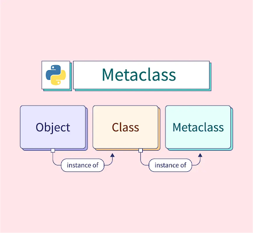
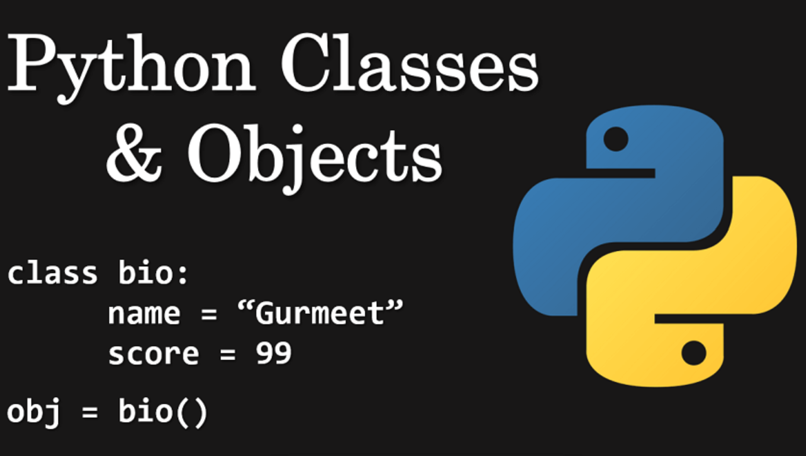
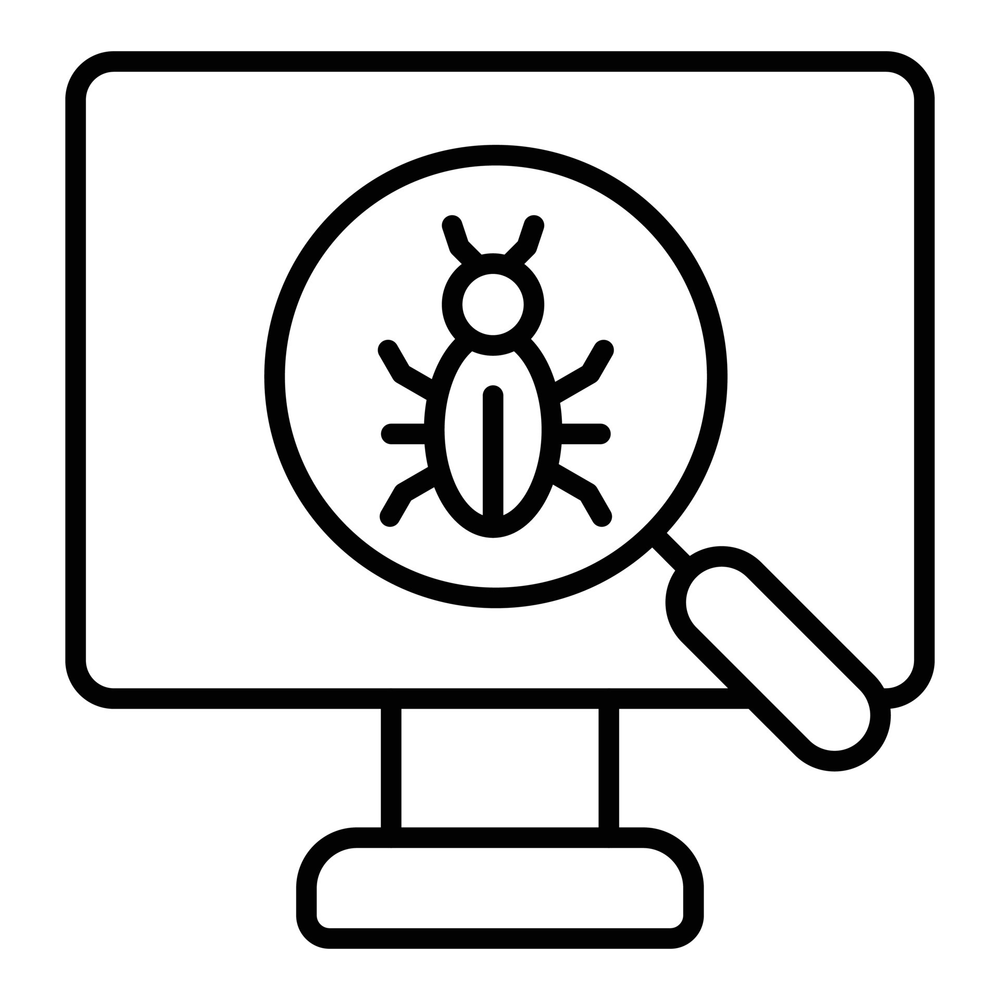

Tony’s Blog ✍️
Computer Science üíª
All
Data Structures and Algorithms
Design Patterns
Coding
LeetCode
Mathematics üßÆ
All
Calculus
Linear Algebra
Data Science üß™
All
Machine Learning
Kaggle
About üêà‚Ä炨õ
Coding üíª
Categories
All
(22)
api
(1)
bash
(2)
c#
(1)
coding
(19)
debugging
(1)
github
(3)
linux
(6)
machine learning
(1)
python
(9)
vscode
(1)

Code 22: Python Metaclasses - Customising Class Creation
coding
python
Being very meta
Dec 31, 2024
Tony Phung
Code 21: Magic Method:
__call__
coding
python
Allowing instances to be called like functions
Dec 30, 2024
Tony Phung
Code 20: Unicode, UTF-8 and Bytes
coding
Converting my (Chinese) name to bytes and back
Dec 23, 2024
Tony Phung
Code 19:
uv
Python & Package Manager
coding
python
A modern alternative to creating & managing Python projects
Dec 3, 2024
Tony Phung
Code 15: Python Exceptions 101
coding
python
Del ving into Python Exceptions, In-Builts vs Custom Exceptions, Assert, Raise and Exception-Handlers
Nov 5, 2024
Tony Phung
Code 18: Introduction to C# in Visual Studio Code
c#
Creating, Building and Running Simple C# Console Apps
Oct 30, 2024
Tony Phung
Code 17: Transfer Multiple Issues via Github API in Bash
coding
github
bash
Run a simple loop to transfer multiple issues from one repo to another
Oct 29, 2024
Tony Phung
Code 16: Open Source as a Beginner
coding
python
Learning How To Contribute to Open Source Projects as a Beginner
Oct 23, 2024
Tony Phung

Code 14: Python Classes Basics 101
coding
python
Python Classes, Instance Objects, Data Attributes and Method Objects
Oct 23, 2024
Tony Phung
Code 13: Shallow or Deep?
coding
python
Learning to copy the right way
Oct 22, 2024
Tony Phung
Code 12: Create new key-bindings in VSCode via JSON file
coding
vscode
A handy keybinding to switch between Terminals in VSCode
Oct 8, 2024
Tony Phung
Code 11: Using Github API via Python
github
api
python
Learn to update an Issue Description with Github’s API
Oct 1, 2024
Tony Phung
Code 10: Add a script to PATH
coding
linux
Run a script without specifying its path
Sep 21, 2024
Tony Phung
Code 9: Creating and using Symlinks
coding
linux
Avoiding unnecessarily duplicating files with Symlinks
Sep 20, 2024
Tony Phung
Code 8: How to install Quarto via WSL
coding
linux
Migrating quarto blog from windows to wsl
Sep 18, 2024
Tony Phung
Code 7: Virtual Environments
coding
python
Setting up virtual environments to produce reproducible work
Jul 20, 2024
Tony Phung
Code 6: Measuring Model Accuracy
machine learning
Step-by-step guide on how to measure accuracy of a deeplearning model
Apr 22, 2024
Tony Phung

Code 5: Debugging a 1-Hidden-Layer Neural Network Model
coding
debugging
Documenting my debugging of a neural network model I built from scratch
Apr 9, 2024
Tony Phung
Code 4: Create new Users in WSL
coding
linux
Quick instructions to set up a new user in wsl
Mar 15, 2024
Tony Phung
Code 3: Bash Basics
coding
linux
bash
Learning Bash from scratch
Feb 28, 2024
Tony Phung
Code 2: Data Science Machine
coding
linux
How to setup a Linux-based Python on a Windows PC for Data Science and Deep Learning Projects
Feb 21, 2024
Tony Phung
Code 1: Github Issues Automation
coding
github
How to automate the closing of an issue in Github Projects via a Commit Message
Feb 20, 2024
Tony Phung
No matching items